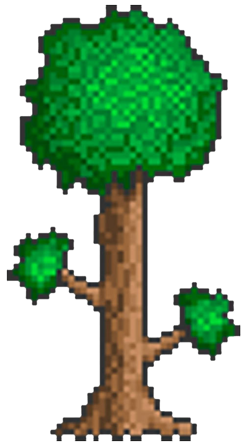
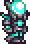

Armor
Guns
Bows
Repeaters
Launchers
 A post-Skeletron armor set. A full set grants a basic 16 defense and 10%
increased ranged critical strike chance. In addition, each piece increases ranged damage by 5%,
increasing ranged damage by a total of 15%.
A post-Skeletron armor set. A full set grants a basic 16 defense and 10%
increased ranged critical strike chance. In addition, each piece increases ranged damage by 5%,
increasing ranged damage by a total of 15%.
 An armor which requires Mythril Bars and must be crafted at a Mythril Anvil. Crafting
a one-helmet set requires 45 Mythril Bars, or 180 Mythril Ore. Gives increases ranged damage and critical strike chance.
The alternative to this armor is Orichalcum armor.
An armor which requires Mythril Bars and must be crafted at a Mythril Anvil. Crafting
a one-helmet set requires 45 Mythril Bars, or 180 Mythril Ore. Gives increases ranged damage and critical strike chance.
The alternative to this armor is Orichalcum armor.
Hover over the armor sets to get a closer look.
Armor sets with the  beside it are clickable. Clickable armor sets have gifs attached to them.
Vortex Armor
 A post-Moon Lord set of armor that primarily provides ranged weapon boosts. It is currently the final ranged armor set. Crafting the full set requires a total of 36 Luminite Bars (144 Luminite) and 45 Vortex Fragments. Double tapping the down key activates stealth. Click the armor set to see it in action.Fossil Armor
A pre-Hardmode armor set. It has notably less defense than most other similarly available armor sets, providing a total of 13 defense.Necro Armor
A post-Skeletron armor set. A full set grants a basic 16 defense and 10%
increased ranged critical strike chance. In addition, each piece increases ranged damage by 5%,
increasing ranged damage by a total of 15%.
Cobalt Armor
A Hardmode armor set crafted from Cobalt Bars and is the alternative to Palladium armor. A full set also grants a total of 3% critical hit chance and +10% movement speed and 10% increased ranged damage and critical strike chance.Palladium Armor
A Hardmode armor set crafted from Palladium Bars and is the alternative to Cobalt armor. A full set also grants the Rapid healing buff upon successful attacks, and increases ranged damage and critical strike chance.Mythril Armor
An armor which requires Mythril Bars and must be crafted at a Mythril Anvil. Crafting
a one-helmet set requires 45 Mythril Bars, or 180 Mythril Ore. Gives increases ranged damage and critical strike chance.
The alternative to this armor is Orichalcum armor.
Orichalcum Armor
A Hardmode armor set and the counterpart to Mythril armor. Crafting a one-helmet set requires 54 Orichalcum Bars or 216 Orichalcum Ore. Gives increased ranged critical strike chance and increased movement speed.Adamantite Armor
A Hardmode armor set, crafting a one-helmet set requires 54 Adamantite Bars, made from 216 Adamantite Ore. Gives increased ranged damage and critical strike chance. Its alternative is Titanium armor. A full set gives off a faint pulsing aura around the character. Click the armor set to see this in action.Titanium Armor
An armor set crafted from Titanium Bars, and is the alternative to Adamantite armor. When the full set is equipped, striking an enemy with a melee, ranged, or magic weapon, or having an enemy be hit by a minion or sentry, will grant the Titanium Barrier buff. Click the armor set to see this in action.Huntress Armor
A Hardmode armor set that gives +36 defense, +20% ranged damage, +30% minion damage, 10% ranged critical chance +20% movement speed, +10% ammo conservation, and +2 extra sentry slots.Hallowed Armor
A Hardmode armor set. Crafting a full set with one headpiece requires 54 Hallowed Bars (dropped by the mechanical bosses). Grants increased ranged damage and critical strike chance. Additionally, wearing a full set, striking an enemy with a melee, ranged, or magic weapon, or having an enemy be hit by one of the player's minions will grant the Holy Protection buff. Click the armor set to see this in action.Frost Armor
A Hardmode armor set that grants the ability to inflict Frostbite on enemies with melee or ranged attacks when the whole set is worn, as well as causing all melee and ranged weapons to give off light. Gives increased melee and ranged damage, critical strike chance, and increased movement and attack speed.Chlorophyte Armor
A Hardmode armor set available after defeating all three mechanical bosses. It can be considered a partial upgrade of Hallowed armor. Equipping the full set causes a Crystal Leaf to permanently appear over the player's head, automatically attacking enemies via a ranged projectile that costs no mana or ammunition. Increases ranged damage and has a chance to not consume ammunition.Red Riding Armor
A ranger-oriented armor set purchased from the Tavernkeep for 225 Defender Medal in total, after Golem has been defeated. earing the full set will cause Explosive Traps to attack much faster and to have a 1/2 chance to inflict 4-9 seconds of the Oiled debuff.Shroomite Armor
A Hardmode, post-Plantera armor set that boosts the effectiveness of ranged weapons. It is available after defeating Plantera and is the second-strongest ranger armor available, only beaten by Vortex armor. Depending on the headpiece type, it either boosts arrow damage, bullet damage, or rocket damage. A pre-Hardmode ranged weapon, a stronger version of the Blowpipe, and is
purchased from the Witch Doctor for 5 Gold. Carrying a Blowgun in the inventory causes any vegetation
growing on normal grass blocks to occasionally yield some Seeds when destroyed.
A pre-Hardmode ranged weapon, a stronger version of the Blowpipe, and is
purchased from the Witch Doctor for 5 Gold. Carrying a Blowgun in the inventory causes any vegetation
growing on normal grass blocks to occasionally yield some Seeds when destroyed.
 A pre-Hardmode gun that can be bought from the Arms Dealer for 35 Gold. It is
capable of autofiring and each shot has a 1/3 (33.33%) chance of not consuming any ammunition. It has the
lowest use time of all pre-Hardmode ranged weapons.
A pre-Hardmode gun that can be bought from the Arms Dealer for 35 Gold. It is
capable of autofiring and each shot has a 1/3 (33.33%) chance of not consuming any ammunition. It has the
lowest use time of all pre-Hardmode ranged weapons.
 A Pre-Hardmode low tier bow made solely out of Copper Bars.
Its basic function is to fire Arrows from a distance to deal damage to enemies.
A Pre-Hardmode low tier bow made solely out of Copper Bars.
Its basic function is to fire Arrows from a distance to deal damage to enemies.
 a low tier bow crafted using Iron Bars. It is slightly stronger than the Copper Bow and Tin Bow.
Its sole purpose is to fire arrows from a distance to deal damage to enemies.
a low tier bow crafted using Iron Bars. It is slightly stronger than the Copper Bow and Tin Bow.
Its sole purpose is to fire arrows from a distance to deal damage to enemies.